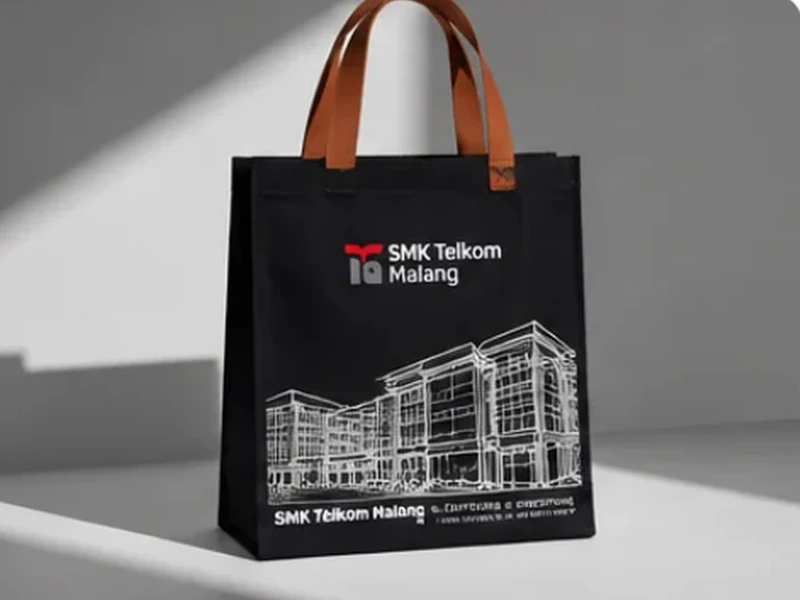

7 Ide Isi Goodie Bag Seminar Kit yang Bermanfaat Bagi Peserta (Anti-Dibuang)

Sering kali peserta seminar menerima tas goodiebag yang isinya hanya berupa tumpukan brosur promosi tebal. Alhasil, setelah acara selesai, brosur tersebut ditinggalkan di kursi atau berakhir di tempat sampah. Agar anggaran pengadaan seminar kit Anda benar-benar menghasilkan kesan positif dan ROI yang tinggi, berikut adalah 7 ide isi souvenir yang terbukti paling disukai dan dipakai berulang kali oleh peserta menurut survei Goodiebag Custom.
1. Buku Catatan Ring Spiral (Notebook A5 Bergaris)
Buku catatan adalah perlengkapan wajib di setiap sesi seminar, lokakarya, atau simposium ilmiah. Pilihlah ukuran standar A5 dengan jilid ring spiral kawat ganda dan sampul kraft coklat pilihan atau hardcover laminasi doff elegan.
Tips Panitia: Tambahkan lembar kata sambutan ketua panitia, rundown acara, dan kalender tahun berjalan pada halaman awal agar nilai gunanya semakin tinggi bagi peserta.
2. Pulpen Gel Ergonomis atau Stylus Sentuh Layar
Hindari memberikan pulpen plastik murah yang sering bocor tintanya atau macet saat dipakai mencatat materi penting. Pulpen gel mata jarum 0.5 mm dengan body soft-touch doff atau pulpen multifungsi berujung stylus sentuh layar akan selalu disimpan peserta di saku kemeja atau pouch kerja mereka.

3. Tali Lanyard ID Card Bahan Woven / Tissue Printing
Selain digunakan untuk menggantung kartu tanda pengenal (ID Card) peserta selama hari H kegiatan, tali lanyard berkualitas dengan pengait logam nikel dan stopper keselamatan akan sering dipakai kembali oleh peserta di kantor atau kampus mereka sehari-hari.
4. Tumbler Minum Stainless Vakum / Tritan BPA-Free
Dukung gerakan premium dan pengurangan sampah botol plastik sekali pakai di venue acara dengan memberikan tumbler minum berlogo grafir laser. Tumbler vacuum thermos mampu menjaga suhu air panas/dingin hingga 8–12 jam, menjadikannya souvenir paling berharga di mata peserta.
Ingin Tas yang Muat Tumbler & Notebook Sekaligus? Baca panduan ukuran di Panduan Memilih Goodie Bag Sesuai Acara atau diskusikan spesifikasi custom di Produk Custom Bebas Desain.
5. Flashdisk USB Card Berisi Materi Digital Pembicara
Flashdisk berbentuk kartu ATM tipis (USB card) berkapasitas 8GB hingga 32GB dengan cetak logo full color sangat praktis diselipkan di saku tas. Anda dapat langsung mengisinya (pre-load) dengan materi slide PDF pembicara, e-book panduan, dan video profil instansi.
6. Hand Sanitizer Pocket Spray Tipis
Botol spray sanitizer seukuran kartu saku dengan ketebalan hanya 1 cm sangat disukai karena tidak memakan tempat di saku celana. Menambahkan stiker label berlogo acara memberikan sentuhan perhatian khusus pada kesehatan peserta.
7. Enamel Pin Maskot Acara / Gantungan Kunci Kulit
Cinderamata artistik seperti pin enamel logam atau gantungan kunci kulit sintetis berukir logo acara memiliki nilai estetika tinggi yang sering disematkan peserta di ransel harian atau jaket mereka.
8. Tips Menghemat Anggaran Pengadaan Paket Bundling
Membeli tas dan aneka isi souvenir secara terpisah dari banyak vendor yang berbeda sering kali memicu pembengkakan biaya ongkos kirim dan risiko keterlambatan jadwal.
Di Goodiebag Custom, kami menyediakan Paket Bundling Siap Pakai: tas tas goodie bag sudah selesai dijahit, dicetak sablon, dan dirakit rapi berisikan notebook, pulpen, serta cinderamata pilihan Anda. Anda tinggal membagikannya ke peserta tanpa repot membungkus ulang di lokasi acara.
Tabel Rekomendasi Paket Isi Seminar Kit Berdasarkan Anggaran
Untuk memudahkan panitia menyusun estimasi Rencana Anggaran Biaya (RAB), berikut adalah matriks kombinasi isi paket seminar kit yang paling populer:
| Tier Paket | Isi Komponen Rekomendasi | Pilihan Bahan Tas | Target Acara |
|---|---|---|---|
| Paket Starter (Ekonomis) | Notebook A5 softcover, pulpen gel, sertifikat materi, gantungan kunci akrilik | Spunbond 75–100 gsm | Seminar kampus massal, talkshow publik, expo |
| Paket Standard (Populer) | Notebook ring spiral, pulpen stylus touch, tali lanyard ID card, pouch pocket sanitizer | Blacu Natural / Kanvas Basic | Workshop profesional, pelatihan dinas, simposium |
| Paket Premium (VIP / Eksekutif) | Hardcover journal agenda, pen logam grafir, tumbler stainless vakum, flashdisk kartu, pin enamel | Kanvas Twill 14 oz / Denim Navy | Konferensi internasional, corporate onboarding, temu mitra |
Pesan Paket Bundling Seminar Kit Komplit Tanpa Repot
Konsultasikan daftar barang yang ingin Anda masukkan ke dalam goodie bag seminar. Kami hitungkan simulasi penawaran harga paket bundling terbaik untuk proposal acara Anda.
Minta Penawaran Bundling via WhatsApp (+62 821-3108-7971)Artikel & Referensi Terkait
Panduan Memilih Goodie Bag Custom Sesuai Jenis Acara
Langkah terstruktur menentukan dimensi tas dan buffer jadwal pengadaan panitia.

Spunbond vs Blacu vs Kanvas: Mana Bahan yang Tepat?
Ulasan mendalam perbandingan serat kain, ketahanan cuci, dan estimasi biaya tas.